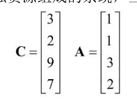
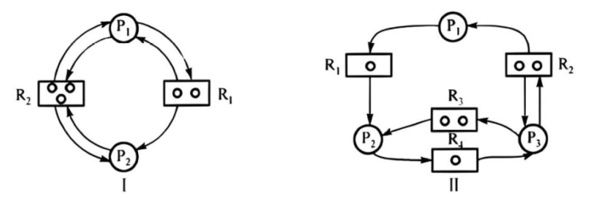
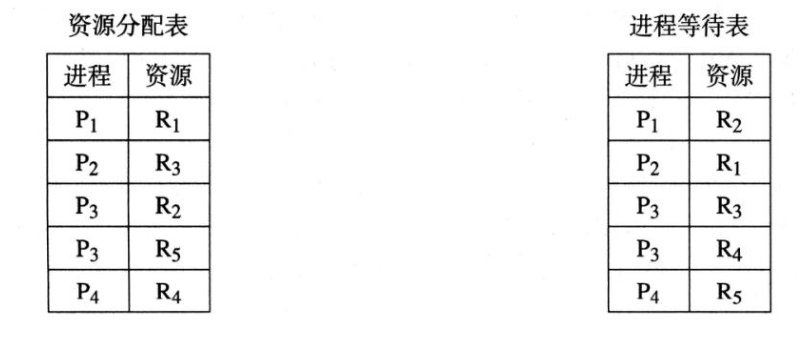

第 121 题
考虑一个由4 个进程和一个单独资源组成的系统，当前的最大需求矩阵和分配矩阵如下：对于安全状态，需要的最小剩余资源数目是（）。

A． 1 B． 2 C． 3 D． 5 答案与解析 答案：C
依次用P1~P4 来表示4 个进程。从矩阵可以看出，4 个进程还需要的资源数目为2、1、6、5，按所需资源数目从小到大排列，即P2、P1、P4、P3，这就是所需最小资源数目的执行顺序。设有x 个可用资源。当x≥1 时，P2 可以执行完成，并释放占用资源，此时资源数为x+1。当x+1≥2 时，P1 可以执行完成，并释放占用资源，此时资源数为x+2。当x+2≥5时，P4可以执行完成，并释放占用资源，此时资源数为x+4。当x+4≥6 时，P3 可以执行完成，并释放占用资源，此时资源数为(忽略)。剩下的，就是求解这个简单的方程组，得出x>=3。
教材第 148 页 第 122 题
下列关于死锁避免和死锁检测的说法中，不正确的是（ ）。
A． 死锁避免可能会要求进程同一时间请求所有资源，而死锁检测不会 B． 死锁避免需要进程运行所需资源总量信息，而死锁检测不需要 C． 死锁避免不会给可能导致死锁的进程分配资源，而死锁检测会 D． 死锁避免会评估分配资源的风险，而死锁检测不会 答案与解析 答案：A
同一时间请求所有资源破坏了死锁产生的请求和保持条件，属于死锁预防的策略，A 错误；死锁避免通过对资源分配的风险评估来决定是否为进程分配资源，需要收集进程运行所需资源总量信息，而死锁检测允许死锁的发生，会给可能导致死锁的进程分配资源，B、C、D 正确。
教材第 148 页 第 123 题
某系统采用资源分配图（RAG）检测死锁。图中包含进程节点{P1,P2,P3,P4} 和资源类节点 {R1,R2}。其中R1 有2 个实例，R2 有2 个实例。当前图中存在以下边：分配边：R₁→P₂，R₁→P₄，R₂→P₃请求边：P₁→R₁，P₂→R₂，P₃→R₁，P₄→R₂若对该图执行死锁检测的图简化算法，下列关于简化结果与系统状态的叙述中，正确的是（）。
A． 图中存在环P₁→R₁→P₂→R₂→P₃→R₁→P₄→R₂→P₁，系统必然处于死锁状态 B． 图可完全简化，P₂ 可作为简化起点，系统不处于死锁状态 C． 图无法完全简化，P₁、P₂、P₃、P₄ 均处于死锁状态 D． 图无法完全简化，但仅P₂ 和P₄ 处于死锁状态 答案与解析 答案：B
资源状态：R1实例全分配（给P2, P4），空闲0；R2分配1给P3，空闲1。找非阻塞进程：请求边对应资源空闲数≥请求量。 P1请求R1（需1，空闲0）→阻塞P2请求R2（需1，空闲1）→非阻塞P3请求R1（需1，空闲0）→阻塞P4请求R2（需1，空闲1）→非阻塞图简化：选P2简化：移除P₂→R₂和R₁→P₂，P2释放持有的R1。R1空闲变为1。选P4简化：移除P₄→R₂和R₁→P₄，P4释放持有的R1。R1空闲变为2。此时P1请求R1（需1 ≤空闲2）→可简化；P3请求R1（需1 ≤空闲2）→可简化。图可完全简化，无死锁。起点P2/P4均可。选B。
教材第 149 页 第 124 题
利用死锁定理简化下列资源分配图，则处于死锁状态的是（ ）。

A． Ⅰ B． Ⅱ C． Ⅰ和Ⅱ D． 都不处于死锁状态 答案与解析 答案：B
根据死锁定理，首先需要找出既不阻塞又非孤点的进程。对于图Ⅰ，由于资源R2 已分配了2 个，还剩一个空闲的R2，可以满足进程P2 的需求。P2 运行结束后，释放一个资源R1和两个资源R2，可以满足P1 进程的需求，从而系统的资源分配图可以完全简化，不处于死锁状态。对于图Ⅱ，P1 需要资源R1，但是唯一一个资源R1，已分配给P2；同理，P2 需要资源R4，而R4资源也只有一个且已经分配给了P3；而P3还需要一个R2资源，但是两个R2资源都已经分配完毕了，所以P1、P2、P3都处于阻塞状态，系统中不存在既不阻塞又不是孤点的进程，所以系统工处于死锁状态。注意：在进程资源图中，P->R 表示进程正在请求资源，R->P 表示资源已被分配给进程(资源只能是被动的)。
教材第 149 页 第 125 题
某一系统在某时刻的资源分配表和进程等待表如下表所示，每种资源都只有一个实例、不可共享且不可剥夺，则下列说法中正确的是（）。

A． 系统中不存在死锁 B． 系统中存在死锁，且终止任意一个进程都可以解除死锁 C． 系统中存在死锁，但终止任意一个进程不一定能解除死锁 D． 无法判断系统中是否存在死锁 答案与解析 答案：C
画出系统当前的资源分配图，如果资源分配图包含了环路，且每种资源只有一个实例，那么系统中存在一个死锁。所以A、D 错误；若终止进程P1，释放其占有的R1，P3、P4 仍然存在回路，所以B 错误。因此选C。
教材第 149 页 第 126 题
下列关于死锁解除策略的叙述中，错误的是（ ）。
A． 最简单直接的死锁解除方法是强制终止系统中的所有死锁进程，但这可能导致已完成大量工作的进程前功尽弃 B． 采用“进程回退”策略时，系统将使一个或多个死锁进程回退到足以避免死锁的某个先前状态 （检查点），但这要求系统记录进程的历史状态信息 C． 剥夺资源是常用的死锁解除方法之一，即从一个或多个死锁进程中抢占某些资源，并将这些资源分配给其他死锁进程，但选择剥夺哪些资源和哪个进程的资源是一个复杂的问题 D． 终止死锁进程时，选择优先级最低的死锁进程予以终止，可以保证系统为解除死锁付出的代价最小 答案与解析 答案：D
A 正确，终止所有死锁进程是一种简单粗暴但能有效解除死锁的方法。它的缺点是代价较大，因为所有死锁进程的工作都会丢失，包括那些可能已经运行了很长时间或接近完成的进程。 B 正确，进程回退是一种尝试恢复到死锁发生前某个安全状态的方法。系统需要周期性地为进程设置检查点，记录进程的状态和资源分配情况。当死锁发生时，可以将某些进程回退到最近的检查点，释放自该检查点以来获得的资源，从而可能打破死锁。这需要系统支持检查点机制。 C 正确，剥夺资源是指从某些死锁进程中强行收回其已分配的资源，并将这些资源分配给其他死锁进程，以打破循环等待。选择剥夺哪个进程的哪些资源以最小化代价是一个复杂的问题，需要考虑进程优先级、已执行时间、已占用资源类型和数量等因素。 D 错误，付出代价的衡量标准是多方面的，例如，该进程已运行的时间、已使用的资源、完成剩余工作所需的时间、进程的重要性（可能与优先级不完全一致）、该进程是交互式还是批处理式等。一个优先级最低的进程可能已经快要完成其任务，或者持有很多关键资源，终止它可能比终止一个优先级稍高但刚开始运行的进程代价更大。因此，选择代价最小的终止进程是一个复杂的决策过程，并非简单地看优先级。
教材第 149 页 第 127 题
某系统有m 个同类资源供n 个进程共享，若每个进程最多申请k 个资源(k>1)，为保证系统不发生死锁，则各进程的最大需求量之和应（）。
A． 等于m B． 等于m+n C． 小于m+n D． 大于m+n 答案与解析 答案：C
n 个进程，分别需要N1, N2, ...Nn 个资源，那么总的所需资源���= �1 + �2 + � . . . + ��=σ�� ，现在可用资源是m 个，最坏的情况是每个进程都分配了Ni-1 个，也就是再分配一 �=1个就可以分配完毕，使用完归还。此时每个进程都差1个的话，那么当前总的已经分配的就是 �� σ(��−1)σ��−�= ���−�。现在只需要再多出1个就能保证任意情况下都不会发生死 = �=1�=1锁，那么�>= ���−�+ 1，整理可得���<= �+ �−1，也就是选C。
教材第 150 页 第 128 题
下列关于死锁的预防、避免、检测和解除的叙述中，正确的有（ ）。
A． 仅Ⅰ、Ⅱ B． 仅Ⅲ、Ⅳ C． 仅Ⅱ、Ⅲ、Ⅳ D． Ⅰ、Ⅱ、Ⅲ、Ⅳ 答案与解析 答案：B
Ⅲ、Ⅳ正确。 Ⅰ错误，资源的有序分配策略（即对资源类型进行线性排序，进程必须按序号递增的顺序申请资源）主要是为了破坏循环等待条件。它并不直接作用于请求和保持条件。破坏请求和保持条件通常采用一次性申请所有资源或在得不到新资源时释放已持有资源等策略。 Ⅱ错误，银行家算法是一种死锁避免算法。它通过在每次资源分配前进行安全性检查，确保系统不会进入不安全状态，从而避免发生死锁。它并不直接破坏死锁的四个必要条件中的任何一个，而是通过动态地控制资源分配来避免形成可能导致死锁的局面。 Ⅲ正确，死锁的发生首先是因为系统中的资源数量有限，不足以满足所有并发进程的需求（资源分配不足）。其次，即使资源不足，如果进程请求和释放资源的顺序得当，也未必会发生死锁。只有当多个进程对资源的请求和保持形成一种特定的循环等待关系，即进程推进顺序非法（导致了循环等待条件），才会最终导致死锁。 Ⅳ正确，进程回退是一种死锁解除策略。当检测到死锁后，系统选择一个或多个死锁进程，使其回退到足以避免死锁的某个先前状态（检查点或还原点）。这要求系统能够记录进程在不同时间点的状态信息（历史信息）并设置还原点，以便能够进行回退操作。
教材第 150 页 第 129 题
在对称多处理（SMP）架构下，关于CPU 调度策略，下列叙述错误的是（ ）。
A． 处理器亲和性是指操作系统尽量让一个进程在同一个处理器核上运行，以维持Cache 的命中率 B． 负载均衡会将工作负载平均分配到所有处理器上，这往往会与处理器亲和性产生策略上的冲突 C． 采用“全局单一就绪队列”方案虽然能自发实现负载均衡，但会导致多个处理器在锁竞争（如竞争就绪队列的互斥锁）上产生严重的性能瓶颈 D． 在多核系统中，为了绝对防止死锁，操作系统必须严禁任何形式的抢占式多核调度 答案与解析 答案：D
A选项正确：进程在某个核上运行久了，该核的Cache里存满了该进程的数据。频繁换核会导致Cache频繁失效，因此需要“处理器亲和性”。 B选项正确：负载均衡要求把进程移到闲置的核上，而亲和性要求留在原核，二者在实际调度中需要进行折中权衡。 C选项正确：多核同时去抢同一个全局队列的锁，会导致严重的互斥锁冲突，因此现代多核系统 （如Linux）通常为每个CPU核心配置独立的私有就绪队列。 D选项错误：多核系统同样大量使用抢占式调度。死锁与抢占没有必然的因果关系，相反，允许强行剥夺资源（抢占）反而是解除死锁的有效手段之一。
教材第 150 页 第 130 题
在实现临界区互斥时，常采用“关中断”或“硬件指令（如TSL/Swap）”的方法。下列关于这些方法的叙述中，错误的是（）。
A． “关中断”方法限制了处理机交替执行指令的能力，不适用于多核处理器系统 B． 使用TSL 指令实现的自旋锁会浪费CPU 资源，违背了“让权等待”原则 C． 用户态进程可以直接执行“关中断”指令来安全、高效地保护自己的临界区 D． 若临界区执行时间极短，在多核系统中使用基于TSL 的自旋锁可能比阻塞锁（Mutex）效率更高 答案与解析 答案：C
关中断”属于特权指令，必须在内核态下执行。如果允许用户态进程执行关中断，恶意进程就可以通过一直关中断来霸占CPU，导致整个系统崩溃。因此C 错误。A 正确（单核关中断有效，多核关中断只能屏蔽当前核的中断，无法阻止其他核进入临界区）；B 正确（自旋锁就是忙等）；D 正确（极短临界区下，自旋锁避免了进程上下文切换的巨大开销，效率更高）。
教材第 150 页 第 131 题
系统中有n 个并发进程竞争使用某类资源，该类资源的总数为K (K≥1)。系统采用记录型信号量S 进行资源分配，其初值S.value = K，阻塞队列S.L 初始为空。在系统运行过程中的某一时刻，测得信号量S 的当前值为V，且此时阻塞队列S.L 中的进程数为m (m>0)。下列关于V,m,K 之间关系的叙述中，必定正确的是（）。
A． V=K−n 且m=n−K B． V<0 且m=−V C． V≤0 且m=K−V D． V=−m 且当前正在使用该资源的进程数为K−m 答案与解析 答案：B
这是记录型信号量最核心的定理。当进程执行wait(S)时，S.value--。初值为K。当V<0时，说明K个资源已经全部分配完毕（消耗了K个value），随后又有m个进程执行了wait并被阻塞（又消耗了m个value）。所以总消耗量为K+m。当前值V=初值−总消耗量 =K−(K+m)=−m。因此，只要有人阻塞（m>0），必定有V<0且m=∣V∣=−V。这个结论与总进程数n完全无关 （因为可能有进程还没申请资源）。D选项后半句错误，只要有人阻塞，说明资源早就被占满了，正在使用的进程数必定是K，而不是K−m。
教材第 150 页